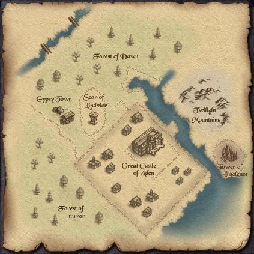

2003年1月3日 韓國測試伺服器 - 亞丁城地圖 來源：Nue's Lineage 昨天韓國測試伺服器終於加入了亞丁城的地圖，主要地點的描述如下： 亞丁巨城(Great Castle of Aden) 亞丁王國的首都，也是亞丁王國的第一大城市，雄偉的亞丁城被一座座高級別墅所圍繞者，貴族們都住在此地，由於亞丁第一大港口的關係，也使的此巨大的城市一直保持著欣欣向榮的繁貌，在許多到附近探險的冒險家也都會在這裡休息片刻，此外謠傳城市裡的下水道與險要的傲慢之塔是相通的，因此也吸引了許多冒險家前來探路，回到地面的冒險家都說下水道裡有著一個似果凍般的綠色怪物，而且十分的難對付。 風龍斷崖(Scar of Lindvior) 存在於亞丁王國的四大邪龍之一，風龍-林德拜爾，一直活要於此斷崖附近，每當他一出現，便烏雲密佈，雷電交加，並且他善於使用閃電，因此要經過此地時，得要特別注意，只要地上看到一個巨大的黑影，不要遲疑快溜就對了。 吉普賽村莊(Gypsy Town) 一群四處流浪的吉普塞人所組成的小村莊，裡面的房舍多為帳棚或拉車式帳棚，十分能突顯出他們常四處流浪遷移的習性。 鏡子森林(Forest of Mirror) 從海音北方至亞丁南方，是一片十分茂密的森林，但是此森林又暗藏殺機，在海音北方附近的森林常有變形怪出沒，由於變形怪會模仿他所見到的人們的樣子，就彷彿看到鏡中的自己一般，因此人們將此森林取名為鏡子森林，而亞丁南方的森林則有著特種的變形魔出沒，雖然變形怪和變形魔對老練的冒險者不構成太大的威脅，但是卻有人傳言看到一個很特殊的黑影在森林裡徘徊，可能就是傳說中的變形魔的首領，因此到此森林時，還是多加注意才好。 黎明森林(Forest of Dawn) 每當商人要經過此處時都十分的頭疼，因為這裡常有一大票的強盜出沒，因此常常被洗劫財物，所以到了這裡還是多注意一下自身的財物，另外這裡也有一小隊一小隊的蜥蜴人和巨人出沒，因此還是小心為妙。 黃昏山脈(Twilight Mountains) 這裡算是巨人們的根據地，幾乎都能看見成群的巨人四處走動，並且有時還會遇見巨人們的首領，千萬別小看巨人首領，畢竟他可是會震裂術的，但較特殊的是，他施展的震裂術並不是以他為中心來施展的，另外他身上的寶物有時也很不錯喔。 傲慢之塔(Tower of Insolence) 亞丁王國的兩座高塔之一，傲慢之塔，原本是一個莊嚴繁華的地方，但卻不之何原因，卻被魔物入侵，現今已成為魔物們的根據地了，而人們謠傳塔的第十層還住著一位將自身變為巫妖的魔法師在那裡守護著，並且對入侵此塔的冒險家展開猛烈的魔法攻擊，而一堆來自魔界的鬼魂和惡魔一直在塔中徘徊，除此之外，還有人看到塔內竟然還住著龍的小孩，以及龍的小孩死後的怨骸，其攻擊力真的令人畏懼三分，而蛇法女也出現於此，究竟此塔淪落到何種地步的恐怖，就有待大家的挑戰了。 |